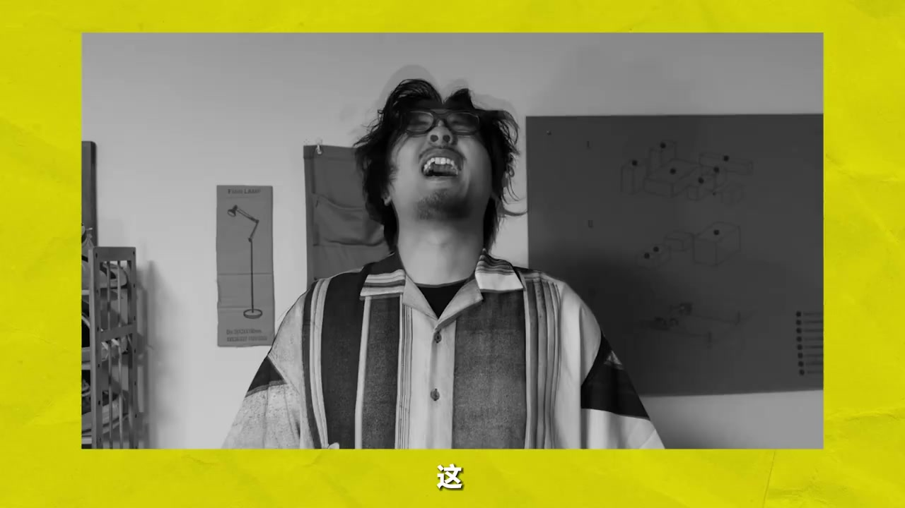
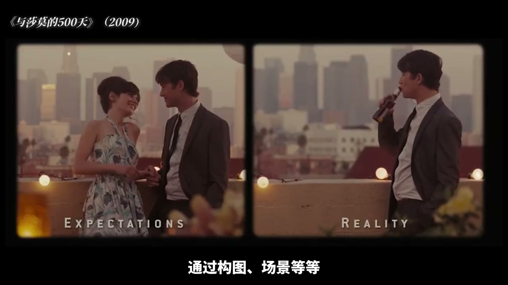
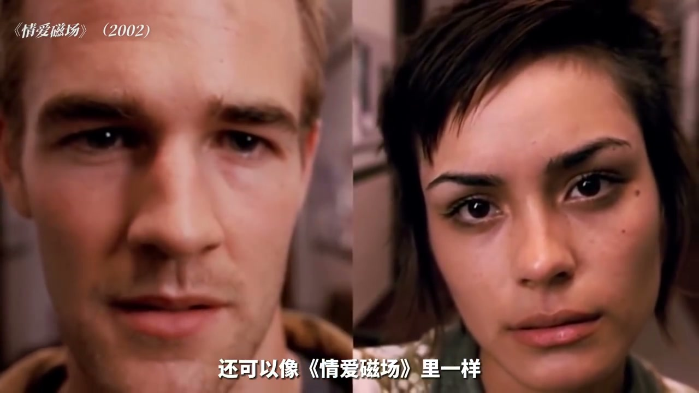
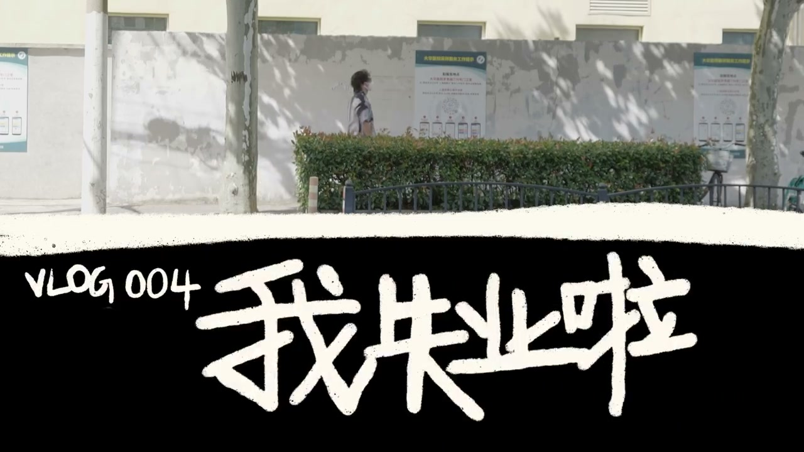

内容要点
[00:00] 这是我准备打喷漆的画面
[00:02] 没什么意思
[00:03] 这是你上班路上的车筐
[00:06] 同样很常见
[00:07] 但如果这样
[00:14] 切形成刚刚那样的画面
[00:16] 我就进行了一个讨作
[00:17] 也就是这期视频的主题
[00:23] 如果你刚开始做视频
[00:24] 非常需要一些简单
[00:25] 但能迅速让画面建立确定的技巧
[00:27] 分品绝对可以拥有幸运
[00:30] 不管是辅助你的情节
[00:32] 来个同频猛太期
[00:33] 还是直接做个有趣的转场
[00:35] 都有可能成为你的Vlog中
[00:36] 让观众眼前一亮的一笔
[00:38] 没错 这期一期久违的
[00:40] 偷学电影碎片
[00:42] 其中简单好用的分评用法
[00:44] 希望可以启发你的灵感
[00:48] 在1916年的俄国电影《黑桃皇后》中
[00:51] 导演者使用了分评的手法
[00:52] 来对比角色的想象与现实
[00:55] 有点熟悉对吧
[00:56] 93年之后
[00:57] 同样的思路
[00:58] 出现在了电影于沙漠的500天中
[01:00] 更加精致
[01:01] 也更加连人心碎
[01:03] 没错 这就是分评非常常见的一种
[01:05] 一种场景
[01:06] 通过构图 场景等等
[01:07] 去营造两块画面的相似性
[01:09] 再通过表演 道具的区别
[01:11] 来营造反差
[01:12] 所谓形成我们期待的趣味性
[01:14] 放在Vlog里或许可以这样用
[01:28] 同样的思路
[01:29] 分评的场景在变化
[01:31] 画面中的人物也不同
[01:32] 比如可以是一男一女
[01:34] 但是构图相同
[01:35] 先两个人都在赶路
[01:37] 一种非常经典的
[01:38] 表现双向奔赴的拍摄手法
[01:41] 如果你有滑轨
[01:42] 或者手超稳的话
[01:43] 还可以像情爱磁场里一样
[01:45] 在角色碰面之后
[01:46] 让分评顺滑的合而为一
[01:49] 由此可见
[01:50] 何同学可能也看过这部电影
[01:52] 另一种社会Vlog利用法
[01:54] 是动漫中常见的多格漫画时分评
[01:56] 用来做Vlog的开头
[01:58] 是个不错的选择
[02:01] 这是一个平凡的一天
[02:02] 我照常见他爬起床
[02:03] 稍微稍微出门上班
[02:05] 然后突然反应过来
[02:08] 我不是已经被踩了吗
[02:10] 还是要怎么搬
[02:23] 光是这样还不能出门
[02:24] 体现分评的乐趣
[02:25] 我们可以尝试
[02:26] 让分评两面的画面
[02:27] 形成一个完整的构图
[02:29] 并且最好让不同空间的场景
[02:31] 发生互动
[02:32] 这种常用于
[02:33] 混减和广告片中的玩法
[02:34] 在Vlog里也同样使用
[02:37] 我们可以这样
[02:38] 拍一段打电话的场景
[02:40] 听说现在一零后
[02:41] 是这样比打电话的
[02:43] 这是真的吗
[02:45] 这是真的吗
[02:47] 听说现在一零后
[02:48] 是这样比打电话的
[02:50] 这是真的吗
[03:10] 很恶趣味
[03:11] 但是我那喜欢是怎么回事
[03:13] 其实在打电话的场景玩分评
[03:15] 在电影里是经常出现的
[03:17] 在电影相对保守的年代
[03:19] 这样的手法能让男女角色
[03:20] 躺在不同的床上
[03:21] 打出骂俏
[03:22] 亲密又不至于鹿骨
[03:24] 如果你有腐拍设备
[03:25] 和愿意配合的女朋友
[03:26] 可以使得这样拍一拍
[03:28] 我暂时都没有
[03:29] 就不给大家演示了
[03:31] 如果你想要你的分评
[03:32] 再多一点点细节的话
[03:34] 可以尝试在分评画面的
[03:35] 进场上画在心思
[03:37] 比如像这样
[03:38] 边开冰箱门
[03:39] 也形成分评
[03:42] 任何一下门或者窗
[03:43] 都可以这样用
[03:46] 拉链也是个不错的小道具
[03:50] 总之就是利用画面中
[03:51] 可能通过动作形成的框架
[03:53] 能让分评画面自然的进场
[03:55] 可谓是千变万化
[03:57] 有使用
[03:59] 相信看到这里
[04:00] 你的脑中影响出
[04:01] 一百种它分评的视频里的方法
[04:03] 分评这种画面处理方法
[04:05] 在电影中是历史悠久
[04:07] 有经久不衰
[04:08] 这就有太多值得接近的桥段了
[04:10] 之后的视频里
[04:11] 也会用到
[04:12] 或者讲到
[04:15] 这就是本期视频的
[04:16] 全部内容了
[04:17] 真的好久好久
[04:18] 没有去这句话了
[04:21] 我终于回来了
[04:23] 我是葡萄头
[04:24] 我们下期再见



